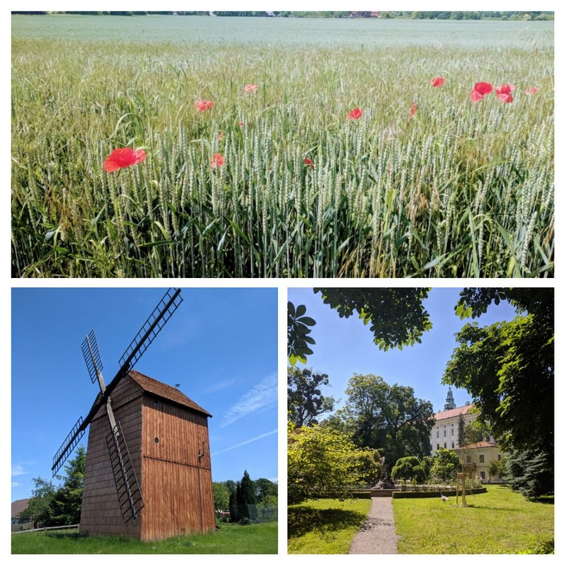
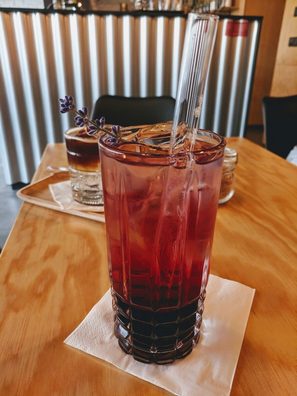
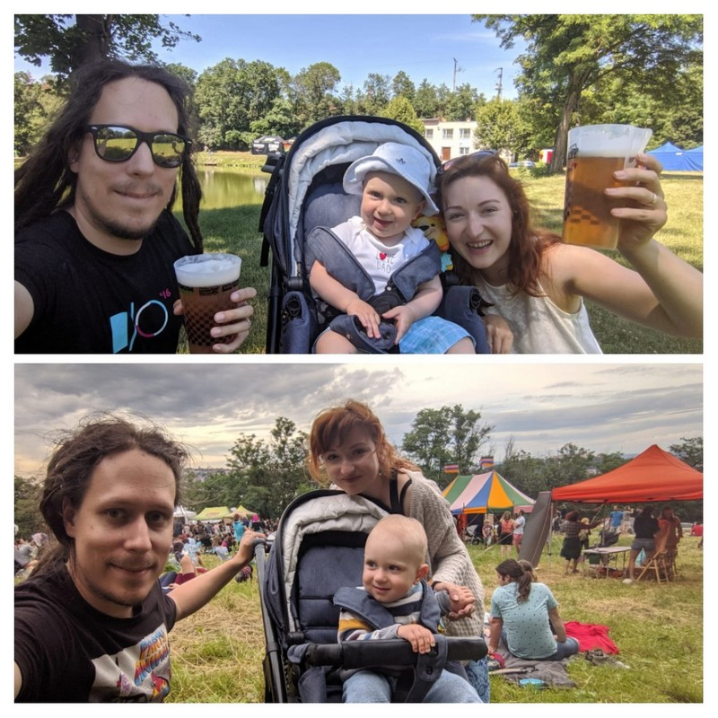
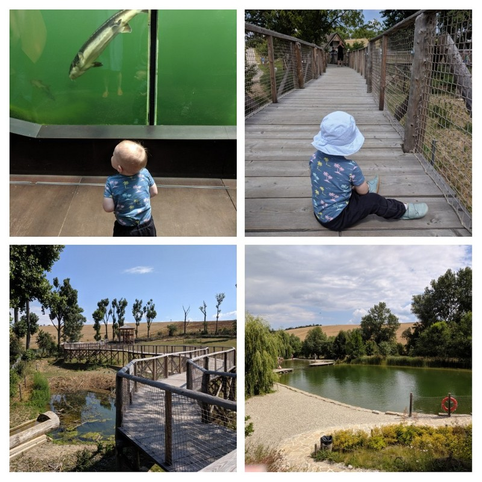
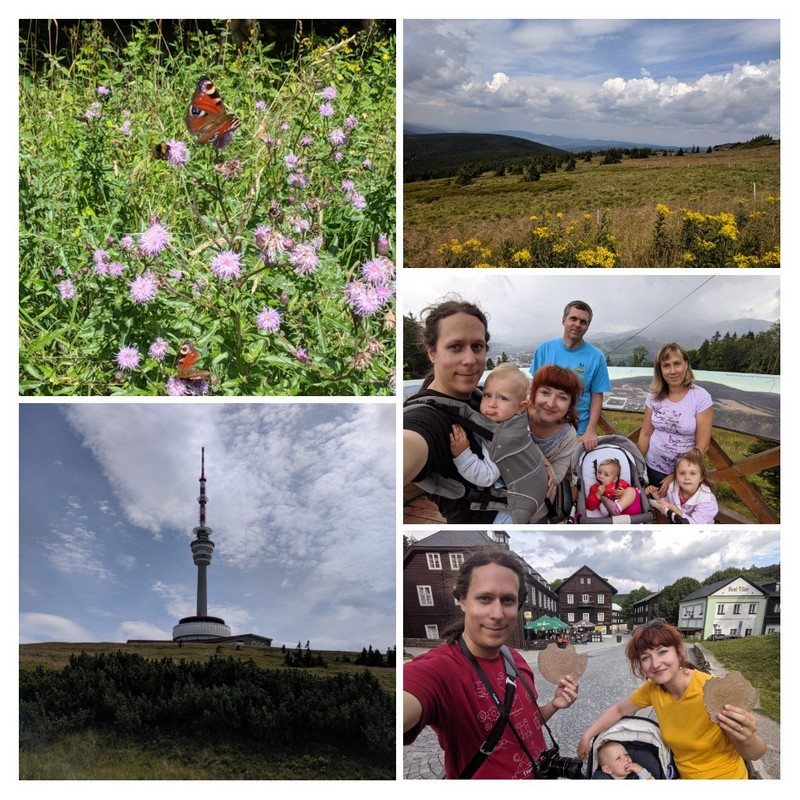
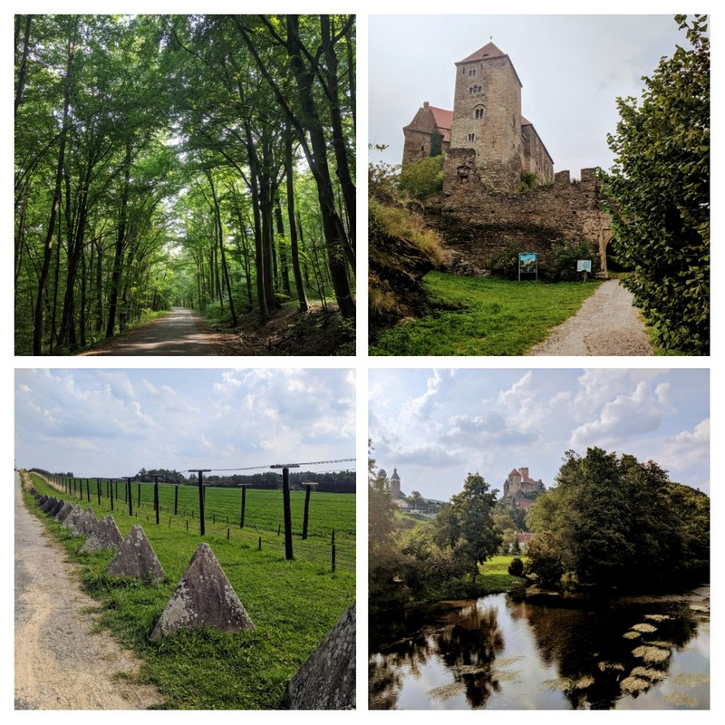

Když se snažím vybavit si nějaký pocit z uplynulého léta, v hlavě mi naskakuje: únava, vyhoření, vyčerpání, úzkost… A pak se kouknu na všechny ty fotky a říkám si, že přes všechno to těžký a negativní jsme si užili spoustu krásných okamžiků. To špatné s odstupem vyšumí. Co zůstane a co bych si chtěla zapamatovat?
Léto… V té nejčistší podobě. Azuro na nebi, vlčí máky v obilí, naše procházky s vůní trávy ve vzduchu…

Těch chvilek, které jsme měli jeden na druhého, bylo sice žalostně málo, ale když už se nějaká našla, užili jsme si ji se vší parádou - třeba jako tady v naší oblíbené příbramské kavárně Smoo :-)

Stejně jako loni, ani letos jsme nevynechali naše oblíbené festivaly Kamenka Open a KrumLoveSka, které jsme si s Olím užili zase o něco víc než před rokem.

Kromě našich tradičních kočárkových výletů bych vypíchla také prémiovou návštěvu areálu “Živá voda” v Modré u Velehradu, kde se nám moc líbilo - hlavně podvodní tunel, kde Olí fascinovaně pozoroval svět pod hladinou, i venkovní procházka s výhledem na pratury. Určitě se rádi vrátíme a napřesrok třeba zkusíme i koupání v biotopu, jehož návštěva je v ceně vstupného.

V srpnu nás také čekala rodinná dovolená se švagrama V. v Jeseníkách. Během pěti dnů jsme navštívili tolik krásných míst a dokonce jsme s Olíkem vylezli až na Praděd! Počasí nám přálo, penzion byl super baby friendly a Olí se dosyta vyřádil se svýma sestřenicema. Věřím, že máme založeno na novou rodinnou tradici :)

Každý volný víkend jsme vyráželi na výlety do blízkého i vzdálenějšího okolí a vůbec nejradši vzpomínám na jeden z těch posledních, kdy jsme se vypravili s Olím poprvé do zahraničí :), do malebné rakouské vesničky Hardegg. Cestou jsme úplnou náhodou narazili na úžasnou restauraci, jen pár dnů po výročí okupace stanuli u pozůstatků železné opony, překročili Dyji, objednali si v Rakousku český kafe, vylezli na hrad a na zpáteční cestě jen o fous utekli bouřce. Tak ráda na ten den vzpomínám :)

Tak si říkám, že bych ten první negativní odstavec možná měla smazat. Že jsme se měli opravdu báječně. Ale ono i to špatný patří k životu a bez něj by nebyl obraz našeho léta kompletní. Jen doufám, že pro letošní podzim (a ještě dlouho dopředu) jsme si to špatný už vybrali a máme se ještě na co těšit. Držte nám palce :)